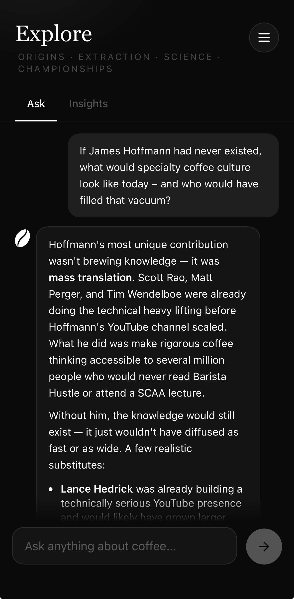

Every interaction
feeds the next.
Not a feature set. A loop. Each part of BrewLog creates data that makes the whole system sharper.
Home brew:
five steps, one session.
Point the camera at the bag. Claude reads origin, process, roast level, variety, and tasting notes — and fills in what the label doesn't say from its own knowledge of the producer, region, or lot. Confidence is tracked per field so you know what was extracted vs. inferred.
Four taps: occasion (morning ritual, focus, experiment, after dinner, social), amount (small / big / custom / surprise), time available, mood. The recommendation adapts completely to the combination. An experiment at 9pm gets a different recipe than a quick morning cup.
One primary method with exact numbers — dose, water, temperature, grind size to the degree, pour sequence as cumulative weights. One alternative. Two sentences of reasoning. The model weighs the coffee's character, your context, your equipment, and your actual rated history. It also notices if your last five brews have been running long and suggests going coarser.
A built-in circular timer shows progress against target. The ring turns amber if you go over. Actual elapsed time is saved — because whether you consistently run long or short is a calibration signal for future grind adjustments, not something you should have to remember yourself.
Star rating, flavour chips, body and acidity. Then two independent dimensions that most apps ignore: craft (was the execution off, solid, or exceptional?) and fit (is this your style, regardless of how well it was made?). Optionally attribute a low score to the brew, the bean, or the roaster. Each dimension flows separately into future recommendations.
Coffee shop visits
are data too.
You don't stop tasting coffee when you leave the house. BrewLog has a dedicated mode for logging sessions at coffee shops — no recipe, no timer, just the taste data that matters.
Scan → context → recipe → brew → log. All five steps, all data captured: recipe, timing, execution, taste, craft, fit.
Name the place, note the coffee and method if known, rate and tag flavours. No brewing variables — pure taste data from someone else's hands.
Coffee shop sessions feed the same taste repository as home brews. A Kenya AA you loved at a Berlin roastery informs the Match Finder the next time you're looking at a Kenyan bag. The system doesn't care who brewed it — it cares what you tasted.

Scan a bag you're considering — at a market, a roastery, a friend's shelf. Claude evaluates it against your actual taste profile and brew history: the origins you've rated highly, the processes that suit your palate, the roasters whose quality has been reliable.
It doesn't just describe the coffee. It tells you whether it's likely to be your kind of thing, and why, with reference to what you've actually rated.
A data occasion that happens before a single gram is ground.

A dedicated space for questions — about methods, origins, extraction science, specific techniques, or your own brew history. Ask why your Clever Dripper tastes flat. Ask how phosphoric acid affects taste. Ask what the Kasuya 4:6 method actually optimises for.
The Insights tab is a curated knowledge base — expertise from people like James Hoffmann, Matt Perger, and the AeroPress Championship circuit, distilled into digestible pieces. Not a feed. Not search results. Things worth knowing, at the moment they become relevant to where you are in your journey.
Knowledge and data, in one place, with context.

Every bag you've scanned and brewed lives in the library — with a count of how many sessions it's been through and the full history of each. The same bag brewed five different ways across three weeks is the richest possible data on what that coffee wants to be.
The library is where patterns become visible. Which roaster you keep coming back to. Which origins keep disappointing. Which processes suit your morning versus your evening.
Your taste profile
emerges from the data.
The taste profile page is not something you fill in. It grows from what you've actually rated. A radar chart maps your flavour preferences across categories — fruity, floral, sweet, nutty, roasted — normalised across all sessions. Top origins, processes, and brew methods ranked by your own average scores. Rating trend over the last six months.
And a section that closes the loop: Explore Next. AI-generated suggestions based on your actual patterns — what you've never tried, what you've underexplored, what correlates with your highest-rated cups. Named origins and processes, not vague prompts. The recommendation engine pointing at the next rabbit hole.